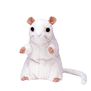
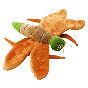
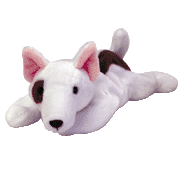
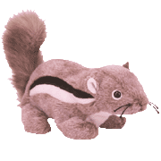
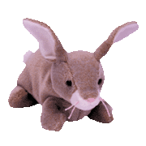
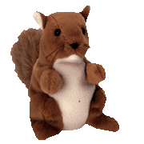
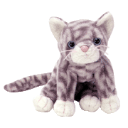
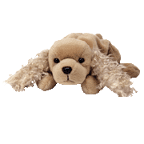
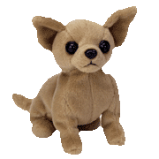
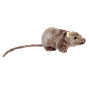

|
Cheezer
the mouse
Date of Birth:
May 09, 2000
[Retired]
I hide in holes
throughout the day
But when night falls I want to play
I sneak around and look for cheese
So be my friend and help me please!
|
Glow
the lightning bug
Date of Birth:
January 04, 2000
[Retired]
To find me when
you want to play
Look for my light to guide the way
I'll be the brightest in the park
I'm the Beanie that glows in the dark!
|
 |

|
Butch
the bull terrier
Date of Birth:
October 02, 1998
[Retired]
Going to the
pet shop to buy dog food
I ran into Butch in a good mood
"Come to the pet shop down the street"
"Be a good dog, I'll buy you a treat!"
|
Chipper
the chipmunk
Date of Birth:
April 21, 1999
[Retired]
I'm quick, I'm
fast, I don't make a peep
But I love to snuggle when I sleep
Take me along when you go play
And I'll make sure you have a nice day!
|
 |

|
Nibbly
the rabbit
Date of Birth:
May 07, 1998
[Retired]
Wonderful ways
to spend a day
Bright and sunny in the month of May
Hopping around as trees sway
Looking for friends, out to play!
|
Nuts
the squirrel
Date of Birth:
January 21, 1996
[Retired]
With his bushy
tail, he'll scamper up a tree
The most cheerful critter you'll ever see,
He's nuts about nuts, and he loves to chat
Have you ever seen a squirrel like that?
|

|

|
Silver
the grey tabby
Date of Birth:
February 11, 1999
[Retired]
Curled up,
sleeping in the sun
He's worn out from having fun
Chasing dust specks in the sunrays
This is how he spends his days!
|
Spunky
the cocker spaniel
Date of Birth:
January 14, 1997
[Retired]
Bouncing around
without much grace
To jump on your lap and lick your face
But watch him closely he has no fears
He'll run so fast he'll trip over his ears
|

|

|
Tiny
the chihuahua
Date of Birth:
September 08, 1998
[Retired]
South of the
Border, in the sun
Tiny the Chihuahua is having fun
Attending fiestas, breaking piñatas
Eating a taco, or some enchiladas!
|
Tiptoe
the mouse
Date of Birth:
January 08, 1999
[Retired]
Creeping
quietly along the wall
Little foot prints fast and small
Tiptoeing through the house with ease
Searching for a piece of cheese!
|

|